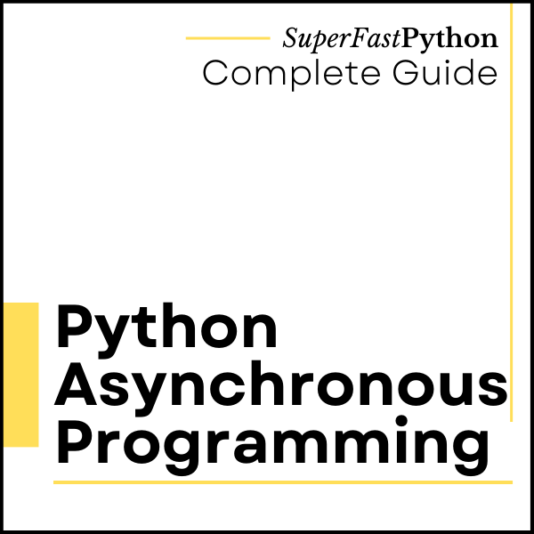

Asynchronous Programming in Python
Asynchronous programming is a programming paradigm that does not block.
Instead, requests and function calls are issued and executed somehow in the background at some future time. This frees the caller to perform other activities and handle the results of issued calls at a later time when results are available or when the caller is interested.
In this tutorial, you will discover asynchronous programming in Python.
- You will discover what asynchronous means, including asynchronous function calls, tasks, and asynchronous programming.
- You will discover how we can use asynchronous programming in Python including the asyncio module, with threads and processes, and with classical and modern pools of workers.
- Finally, you will discover worked examples of asynchronous processing that you can use as templates in your own programs.
Let's get started.

What is Asynchronous
Before we dive into asynchronous programming in Python, let's understand what "asynchronous" means.
Asynchronous means not at the same time, as opposed to synchronous or at the same time.
asynchronous: not simultaneous or concurrent in time
-- Merriam-Webster Dictionary
When programming, asynchronous means that the action is requested, although not performed at the time of the request. It is performed later.
Asynchronous: Separate execution streams that can run concurrently in any order relative to each other are asynchronous.
-- Page 265, The Art of Concurrency, 2009.
For example, we can make an asynchronous function call.
This will issue the request to make the function call and will not wait around for the call to complete. We can choose to check on the status or result of the function call later.
- Asynchronous Function Call: Request that a function is called at some time and in some manner, allowing the caller to resume and perform other activities.
The function call will happen somehow and at some time, in the background, and the program can perform other tasks or respond to other events.
This is key. We don't have control over how or when the request is handled, only that we would like it handled while the program does other things.
Issuing an asynchronous function call often results in some handle on the request that the caller can use to check on the status of the call or get results. This is often called a future.
- Future: A handle on an asynchronous function call allowing the status of the call to be checked and results to be retrieved.
The combination of the asynchronous function call and future together are often referred to as an asynchronous task. This is because it is more elaborate than a function call, such as allowing the request to be canceled and more.
- Asynchronous Task: Used to refer to the aggregate of an asynchronous function call and resulting future.
Issuing asynchronous tasks and making asynchronous function calls is referred to as asynchronous programming.
So what is asynchronous programming? It means that a particular long-running task can be run in the background separate from the main application. Instead of blocking all other application code waiting for that long-running task to be completed, the system is free to do other work that is not dependent on that task. Then, once the long-running task is completed, we'll be notified that it is done so we can process the result.
-- Page 3, Python Concurrency with asyncio, 2022.
- Asynchronous Programming: The use of asynchronous techniques, such as issuing asynchronous tasks or function calls.
Asynchronous programming is primarily used with non-blocking I/O, such as reading and writing from socket connections with other processes or other systems.
In non-blocking mode, when we write bytes to a socket, we can just fire and forget the write or read, and our application can go on to perform other tasks.
-- Page 18, Python Concurrency with asyncio, 2022.
Non-blocking I/O is a way of performing I/O where reads and writes are requested, although performed asynchronously. The caller does not need to wait for the operation to complete before returning.
The read and write operations are performed somehow (e.g. by the underlying operating system or systems built upon it), and the status of the action and/or data is retrieved by the caller later, once available, or when the caller is ready.
- Non-blocking I/O: Performing I/O operations via asynchronous requests and responses, rather than waiting for operations to complete.
As such, we can see how non-blocking I/O is related to asynchronous programming. In fact, we use non-blocking I/O via asynchronous programming or non-blocking I/O is implemented via asynchronous programming.
The combination of non-blocking I/O with asynchronous programming is so common that it is commonly referred to by the shorthand of asynchronous I/O.
- Asynchronous I/O: A shorthand that refers to combining asynchronous programming with non-blocking I/O.
Next, let's consider asynchronous programming support in Python.
Asynchronous Programming in Python
Broadly, asynchronous programming in Python refers to making requests and not blocking to wait for them to complete.
We can implement asynchronous programming in Python in various ways, although a few are most relevant for Python concurrency.
The first and obvious example is the "asyncio" module. This module directly offers an asynchronous programming environment using the async/await syntax and non-blocking I/O with sockets and subprocesses.
asyncio is short for asynchronous I/O. It is a Python library that allows us to run code using an asynchronous programming model. This lets us handle multiple I/O operations at once, while still allowing our application to remain responsive.
-- Page 3, Python Concurrency with asyncio, 2022.
It is implemented using coroutines that run in an event loop that itself runs in a single thread.
- Asyncio: An asynchronous programming environment provided in Python via the asyncio module.
More broadly, Python offers threads and processes that can execute tasks asynchronously.
For example, one thread can start a second thread to execute a function call and resume other activities. The operating system will schedule and execute the second thread at some time and the first thread may or may not check on the status of the task, manually.
Threads are asynchronous, meaning that they may run at different speeds, and any thread can halt for an unpredictable duration at any time.
-- Page 76, The Art of Multiprocessor Programming, 2020.
More concretely, Python provides executor-based thread pools and process pools in the ThreadPoolExecutor and ProcessPoolExeuctor classes.
These classes use the same interface and support asynchronous tasks via the submit() method that returns a Future object.
The concurrent.futures module provides a high-level interface for asynchronously executing callables. The asynchronous execution can be performed with threads, using ThreadPoolExecutor, or separate processes, using ProcessPoolExecutor.
-- concurrent.futures — Launching parallel tasks
The multiprocessing module also provides pools of workers using processes and threads in the Pool and ThreadPool classes, forerunners to the ThreadPoolExecutor and ProcessPoolExeuctor classes.
The capabilities of these classes are described in terms of worker execution tasks asynchronously. They explicitly provide synchronous (blocking) and asynchronous (non-blocking) versions of each method for executing tasks.
For example, one may issue a one-off function call synchronously via the apply() method or asynchronously via the apply_async() method.
A process pool object which controls a pool of worker processes to which jobs can be submitted. It supports asynchronous results with timeouts and callbacks and has a parallel map implementation.
-- multiprocessing — Process-based parallelism
There are other aspects of asynchronous programming in Python that are less strictly related to Python concurrency.
For example, Python processes receive or handle signals asynchronously. Signals are fundamentally asynchronous events sent from other processes.
This is primarily supported by the signal module.
https://docs.python.org/3/library/signal.html
Next, let's look at examples of asynchronous programming in Python
Asynchronous Programming with Asyncio
Python directly supports asynchronous programming.
It is supported by changes to the language that introduces the async/await syntax.
Such as defining coroutines using the "async def" expression.
Functions defined with async def syntax are always coroutine functions, even if they do not contain await or async keywords.
-- Coroutine function definition
It also includes changes for traversing asynchronous iterables using the "async for" expression and using asynchronous context managers via the "async with" expression.
An asynchronous iterable provides an __aiter__ method that directly returns an asynchronous iterator, which can call asynchronous code in its __anext__ method. The async for statement allows convenient iteration over asynchronous iterables.
-- The async for statement
Coroutines can choose to suspend their execution and allow other coroutines within the same event loop to execute via the "await" expression.
Suspend the execution of coroutine on an awaitable object. Can only be used inside a coroutine function.
-- Await expression
Python also supports asynchronous programming directly via the asyncio module that provides utility functions and classes to assist in creating and managing asynchronous tasks and performing non-blocking I/O with sockets and subprocesses.
asyncio is a library to write concurrent code using the async/await syntax. asyncio is used as a foundation for multiple Python asynchronous frameworks that provide high-performance network and web-servers, database connection libraries, distributed task queues, etc.
-- asyncio — Asynchronous I/O
Let's look at how we might execute an asynchronous task using the Python asynchronous expressions and asyncio module in the standard library.
Asynchronous Task with the Asyncio
We can execute a task asynchronously using asyncio.
This would be appropriate for executing I/O-bound tasks, specifically those that make use of non-blocking IO, such as with sockets and subprocesses.
In this example, we can create a new coroutine and then schedule it for execution as an independent task within the asyncio event loop.
This returns a Task object that provides a handle on the asynchronous task.
The main program can continue with other activities.
At some later point, the main program can choose to interact with the asynchronous task, such as waiting for it to complete or retrieve the return value.
In this case, we will suspend execution and wait for it to complete via the Task object.
The complete example is listed below.
# SuperFastPython.com
# example of asynchronous programming with asyncio
import asyncio
# define a coroutine to run as a task
async def task_coroutine():
# report a message
print('Hello from the task')
# sleep a moment
await asyncio.sleep(1)
# report another message
print('Task is all done')
# entry point coroutine
async def main():
# create the task coroutine
coro = task_coroutine()
# wrap in a task object and schedule execution
task = asyncio.create_task(coro)
# suspend a moment to allow the task to run
await asyncio.sleep(0)
# do other things, like report a message
print('Main is doing other things...')
# wait for the task to complete
await task
# entry point into the program
asyncio.run(main())
Running the example first creates the main() coroutine and uses it as the entry point into the asyncio program.
The main() coroutine runs and first creates the task_coroutine() coroutine.
It then wraps this coroutine in a Task object and schedules it for independent execution within the event loop.
The main() coroutine then suspends for a moment, allowing other coroutines to run, such as the Task that we just scheduled. This is optional in this case.
The task_coroutine() executes and reports a message then suspends, sleeping for a moment.
The main() coroutine resumes and continues on with other activities. In this case, it waits for the new task to complete. It suspends and awaits it directly.
The task coroutine resumes at some point, reports a final message, then terminates.
The main coroutine resumes and terminates, closing the program.
This highlights how we can execute a task asynchronously as a coroutine using asyncio in Python.
Hello from the task
Main is doing other things...
Task is all doneNext, let's explore how to execute asynchronous tasks using the Python executor classes.
Asynchronous Programming with Executors
Python provides asynchronous task execution via the concurrent.futures module.
This module provides an executor framework for executing ad hoc tasks using pools of workers.
One-off tasks can be issued asynchronously via the submit() method that returns immediately a Future object.
submit(): Schedules the callable, fn, to be executed [...] and returns a Future object representing the execution of the callable.
-- concurrent.futures — Launching parallel tasks
The Future object can be used to check if the task is running, done, or was canceled. It may also be used to cancel the task, to retrieve the return value and any exception raised.
The Future class encapsulates the asynchronous execution of a callable. Future instances are created by Executor.submit().
-- concurrent.futures — Launching parallel tasks
Multiple tasks may be issued all at once using the map() method, however, the caller will block until all tasks are completed and an iterable of return values is returned.
map() [...] func is executed asynchronously and several calls to func may be made concurrently.
-- concurrent.futures — Launching parallel tasks
This method is described as being asynchronous, although given that the caller blocks and there no Future objects are created, I don't think it fits the definition.
Two implementations are provided, the ThreadPoolExecutor for pools of worker threads suited to I/O-bound tasks, and the ProcessPoolExecutor suited for CPU-bound tasks.
Let's look at an example of issuing an asynchronous task with each in turn.
Asynchronous Task with the ThreadPoolExecutor
We can execute a task asynchronously using the ThreadPoolExecutor.
This would be appropriate for executing I/O-bound tasks.
You can learn more about how and when to use ThreadPoolExecutor in the guide:
In this example, we can create a new ThreadPoolExecutor using the context manager interface.
We then issue a single asynchronous task to execute the target function in a new thread using the submit() method.
You can learn more about the submit() method in the tutorial:
This returns a Future object that provides a handle on the asynchronous task.
The main program can continue on with other activities.
At some later point, the main program can choose to interact with the asynchronous task, such as waiting for it to complete or retrieve the return value.
In this case, we will wait for it to be complete via the Future object.
You can learn more about interacting with ThreadPoolExecutor tasks via the Future object in the tutorial:
The complete example is listed below.
# SuperFastPython.com
# example of a one-off asynchronous task with a thread pool executor
from time import sleep
from concurrent.futures import ThreadPoolExecutor
# function to execute in a new thread
def task():
# report a message
print('Hello from the task')
# sleep a moment
sleep(1)
# report another message
print('Task is all done')
# entry point
if __name__ == '__main__':
# create the thread pool executor
with ThreadPoolExecutor() as exe:
# issue the task asynchronously
future = exe.submit(task)
# do other things, like report a message
print('Main is doing other things...')
# wait for the task to complete
_ = future.result()
Running the example first creates and configures the new ThreadPoolExecutor.
It creates one thread worker for each logical CPU in the system, plus 4, and starts all worker threads immediately.
The task is issued to the ThreadPoolExecutor asynchronously, returning a Future object.
The main thread then continues on, in this case, reporting a message.
It then uses the Future object and waits for the asynchronous task to complete.
The asynchronous task executes at some point. It reports a message, sleeps for a moment, then reports a final message.
Once the new task is completed, the main thread resumes and exits the context manager block which closes the thread pool and releases all of the resources.
Hello from the task
Main is doing other things...
Task is all doneYou may want to retrieve results from the asynchronous task executed in the ThreadPoolExecutor.
You can learn more about retrieving return values from ThreadPoolExecutor asynchronous tasks in the tutorial:
Next, let's look at how we might execute an asynchronous task using a process pool executor.
Asynchronous Task with the ProcessPoolExecutor
We can execute a task asynchronously using the ProcessPoolExecutor.
This would be appropriate for executing CPU-bound tasks.
You can learn more about how and when to use ProcessPoolExecutor in the guide:
In this example, we can create a new ProcessPoolExecutor using the context manager interface.
We then issue a single asynchronous task to execute the target function in a new process using the submit() method.
You can learn more about the submit() method in the tutorial:
This returns a Future object that provides a handle on the asynchronous task.
The main program can continue with other activities.
At some later point, the main program can choose to interact with the asynchronous task, such as waiting for it to complete or retrieve the return value. In this case, we will wait for it to be complete via the Future object.
You can learn more about interacting with ProcessPoolExecutor tasks via the Future object in the tutorial:
The complete example is listed below.
# SuperFastPython.com
# example of a one-off asynchronous task with a process pool executor
from time import sleep
from concurrent.futures import ProcessPoolExecutor
# function to execute in a new process
def task():
# report a message
print('Hello from the task', flush=True)
# sleep a moment
sleep(1)
# report another message
print('Task is all done', flush=True)
# entry point
if __name__ == '__main__':
# create the process pool executor
with ProcessPoolExecutor() as exe:
# issue the task asynchronously
future = exe.submit(task)
# do other things, like report a message
print('Main is doing other things...')
# wait for the task to complete
_ = future.result()
Running the example first creates and configures the new ProcessPoolExecutor.
It creates one process worker for each logical CPU in the system and starts all worker processes immediately.
The task is issued to the ProcessPoolExecutor asynchronously, returning a Future object.
The main process then continues on, in this case, reporting a message.
It then uses the Future object and waits for the asynchronous task to complete.
The asynchronous task executes at some point. It reports a message, sleeps for a moment, then reports a final message.
Once the new task is completed, the main process resumes and exits the context manager block which closes the process pool and releases all of the resources.
Main is doing other things...
Hello from the task
Task is all doneYou may want to retrieve results from the asynchronous task executed in the ProcessPoolExecutor.
You can learn more about retrieving return values from ProcessPoolExecutor asynchronous tasks in the tutorial:
Next, let's explore how to execute asynchronous tasks using the Python ThreadPool and Pool classes.
Asynchronous Programming with ThreadPool and Pool
Python also provides asynchronous task execution via the multiprocessing.pool module.
One-off asynchronous tasks can be issued via the apply_async() method that takes a callable and returns an AsyncResult object that provides a handle on the issued task.
apply_async(): A variant of the apply() method which returns a AsyncResult object.
-- multiprocessing — Process-based parallelism
Multiple tasks may be issued to the pool using the map_async() method for target functions that take one argument and the starmap_async() for target functions that take multiple arguments.
Both functions return immediately with an AsyncResult object that provides a handle on the group of issued tasks.
map_async(): A variant of the map() method which returns a AsyncResult object.
-- multiprocessing — Process-based parallelism
The AsyncResult object allows the status of the task to be checked including whether it is completed and if so whether it was successful. It also allows a caller to wait for the task to complete and for the return value to be retrieved.
This module provides the Pool class that provides a pool of reusable worker processes.
A process pool object which controls a pool of worker processes to which jobs can be submitted. It supports asynchronous results with timeouts and callbacks and has a parallel map implementation.
-- multiprocessing — Process-based parallelism
It also provides the ThreadPool class that wraps the Pool class and provides an implementation of the same interface that uses threads instead of processes.
A ThreadPool shares the same interface as Pool, which is designed around a pool of processes and predates the introduction of the concurrent.futures module. As such, it inherits some operations that don’t make sense for a pool backed by threads, and it has its own type for representing the status of asynchronous jobs, AsyncResult, that is not understood by any other libraries.
-- multiprocessing — Process-based parallelism
Let's look at an example of issuing an asynchronous task with each in turn.
Asynchronous Task with a ThreadPool
We can execute a task asynchronously using the ThreadPool.
This would be appropriate for executing I/O-bound tasks.
You can learn more about how and when to use ThreadPool in the guide:
In this example, we can create a new ThreadPool using the context manager interface.
We then issue a single asynchronous task to execute the target function in a new thread using the apply_async() method.
You can learn more about the apply_async() method in the tutorial:
This returns an AsyncResult object that provides a handle on the asynchronous task.
The main program can continue with other activities.
At some later point, the main program can choose to interact with the asynchronous task, such as waiting for it to complete or retrieve the return value. In this case, we will wait for it to complete via the AsyncResult object.
You can learn more about interacting with ThreadPool tasks via the AsyncResult object in the tutorial:
The complete example is listed below.
# SuperFastPython.com
# example of a one-off asynchronous task with a thread pool
from time import sleep
from multiprocessing.pool import ThreadPool
# function to execute in a new thread
def task():
# report a message
print('Hello from the task')
# sleep a moment
sleep(1)
# report another message
print('Task is all done')
# entry point
if __name__ == '__main__':
# create the thread pool
with ThreadPool() as pool:
# issue the task asynchronously
async_result = pool.apply_async(task)
# do other things, like report a message
print('Main is doing other things...')
# wait for the task to complete
async_result.wait()
Running the example first creates and configures the new ThreadPool.
It creates one thread worker for each logical CPU in the system and starts all worker threads immediately.
The task is issued to the ThreadPool asynchronously, returning an AsyncResult object.
The main thread then continues on, in this case, reporting a message.
It then uses the AsyncResult object and waits for the asynchronous task to complete.
The asynchronous task executes at some point. It reports a message, sleeps for a moment, then reports a final message.
Once the new task is completed, the main thread resumes and exits the context manager block which closes the thread pool and releases all of the resources.
Main is doing other things...
Hello from the task
Task is all doneYou may want to retrieve results from the asynchronous task executed in the ThreadPool.
You can learn more about retrieving return values from ThreadPool asynchronous tasks in the tutorial:
Next, let's look at how we might execute an asynchronous task using a process pool.
Asynchronous Task with a Pool
We can execute a task asynchronously using the multiprocessing Pool.
This would be appropriate for executing CPU-bound tasks.
You can learn more about how and when to use Pool in the guide:
In this example, we can create a new Pool using the context manager interface.
We then issue a single asynchronous task to execute the target function in a new process using the apply_async() method.
You can learn more about the apply_async() method in the tutorial:
This returns an AsyncResult object that provides a handle on the asynchronous task.
The main program can continue with other activities.
At some later point, the main program can choose to interact with the asynchronous task, such as waiting for it to complete or retrieve the return value. In this case, we will wait for it to complete via the AsyncResult object.
You can learn more about interacting with Pool tasks via the AsyncResult object in the tutorial:
The complete example is listed below.
# SuperFastPython.com
# example of a one-off asynchronous task with a process pool
from time import sleep
from multiprocessing.pool import Pool
# function to execute in a new process
def task():
# report a message
print('Hello from the task', flush=True)
# sleep a moment
sleep(1)
# report another message
print('Task is all done', flush=True)
# entry point
if __name__ == '__main__':
# create the process pool
with Pool() as pool:
# issue the task asynchronously
async_result = pool.apply_async(task)
# do other things, like report a message
print('Main is doing other things...')
# wait for the task to complete
async_result.wait()
Running the example first creates and configures the new Pool.
It creates one process worker for each logical CPU in the system and starts all worker processes immediately.
The task is issued to the Pool asynchronously, returning an AsyncResult object.
The main process then continues on, in this case, reporting a message.
It then uses the AsyncResult object and waits for the asynchronous task to complete.
The asynchronous task executes at some point. It reports a message, sleeps for a moment, then reports a final message.
Once the new task is completed, the main process resumes and exits the context manager block which closes the process pool and releases all of the resources.
Main is doing other things...
Hello from the task
Task is all doneYou may want to retrieve results from the asynchronous task executed in the Pool.
You can learn more about retrieving return values from Pool asynchronous tasks in the tutorial:
Next, let's explore how to execute asynchronous tasks using Python threads and processes.
Asynchronous Programming with Threads and Processes
Finally, Python provides manual asynchronous task execution via the threading and multiprocessing modules.
Specifically, we can create and start new threads and processes, configured to execute a target function.
The caller can start the new thread or process, then resume other activities. It may choose to wait for the task to complete and it may choose to retrieve a return value from the task, although this latter aspect must be performed manually.
New threads and processes have a lot in common. They are both real constructs created and managed by the underlying operating system.
They both have a Python object representation that takes the name of the target function to execute as a constructor argument.
The threading module came first and provided the Thread class inspired by Java-based threading.
The Thread class represents an activity that is run in a separate thread of control. There are two ways to specify the activity: by passing a callable object to the constructor, or by overriding the run() method in a subclass.
-- threading — Thread-based parallelism
The multiprocessing module came later, in Python 2.6/3.0, and implements the same interface and provides the Process class.
Process objects represent activity that is run in a separate process. The Process class has equivalents of all the methods of threading.Thread.
-- multiprocessing — Process-based parallelism
Let's look at an example of issuing an asynchronous task with each in turn.
Asynchronous Task with a Thread
We can execute a task asynchronously in a new thread.
This would be appropriate for executing I/O-bound tasks.
You can learn more about how and when to use threads in the guide:
In this example, we can create a new thread and specify the target function to execute.
The thread can be started and will execute the target function at some time. The operating system will decide when to context switch to the new thread and allow it to execute.
You can learn more about how to run functions in new threads in the tutorial:
The main program can continue on with other tasks.
At some later point, the program can choose to interact with the asynchronous task, such as waiting for it to complete or retrieve the return value. In this case, we will join the thread and wait for it to complete.
You can learn more about joining threads in the tutorial:
The complete example is listed below.
# SuperFastPython.com
# example of a one-off asynchronous task with a thread
from time import sleep
from threading import Thread
# function to execute in a new thread
def task():
# report a message
print('Hello from the task')
# sleep a moment
sleep(1)
# report another message
print('Task is all done')
# entry point
if __name__ == '__main__':
# create the new thread
thread = Thread(target=task)
# start the new thread
thread.start()
# do other things, like report a message
print('Main is doing other things...')
# wait for the task to complete
thread.join()
Running the example first creates and configures the new thread to execute the target function.
The new thread is started and will execute at some time in the future.
The main thread then continues on, in this case, reporting a message.
It then joins the new thread, waiting for it to complete.
The new thread executes at some point. It reports a message, sleeps for a moment, then reports a final message.
Once the new thread is completed, the main thread resumes and terminates the program.
Hello from the task
Main is doing other things...
Task is all doneYou may want to retrieve results from the asynchronous task executed in the new thread.
You can learn more about retrieving return values from new threads in the tutorial:
Next, let's look at how we might execute an asynchronous task using a new process.
Asynchronous Task with a Process
We can execute a task asynchronously in a new process.
This would be appropriate for executing CPU-bound tasks.
You can learn more about how and when to use threads in the guide:
In this example, we can create a new process and specify the target function to execute.
The process can be started and will execute the target function at some time. The operating system will decide when to context switch to the new process with a new main thread, and allow it to execute.
You can learn more about how to run functions in new processes in the tutorial:
The main program can continue on with other tasks.
At some later point, the program can choose to interact with the asynchronous task, such as waiting for it to complete or retrieve the return value. In this case, we will join the process and wait for it to be complete.
You can learn more about joining processes in the tutorial:
The complete example is listed below.
# SuperFastPython.com
# example of a one-off asynchronous task with a process
from time import sleep
from multiprocessing import Process
# function to execute in a new process
def task():
# report a message
print('Hello from the task', flush=True)
# sleep a moment
sleep(1)
# report another message
print('Task is all done', flush=True)
# entry point
if __name__ == '__main__':
# create the new process
process = Process(target=task)
# start the new process
process.start()
# do other things, like report a message
print('Main is doing other things...')
# wait for the task to complete
process.join()
Running the example first creates and configures the new process to execute the target function.
The new process is started and will execute at some time in the future.
The main process then continues on, in this case, reporting a message.
It then joins the new process, waiting for it to complete.
The new process executes at some point. It reports a message, sleeps for a moment, then reports a final message.
Once the new process is completed, the main process resumes and terminates the program.
Main is doing other things...
Hello from the task
Task is all doneYou may want to retrieve results from the asynchronous task executed in the new process.
You can learn more about retrieving return values from new processes in the tutorial:
Takeaways
You now know how to use asynchronous programming in Python.